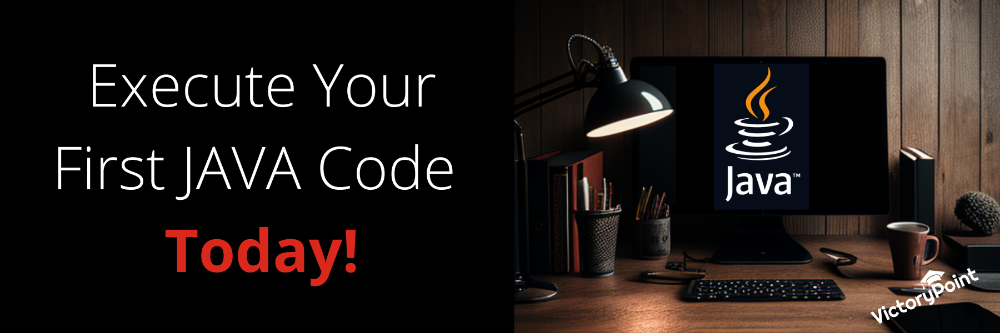

Writing, Compiling and Executing a Simple Java Program
Welcome to the world of Java programming! In this blog, we'll be talking about writing, compiling, and executing simple Java programs, and how you can do it using both a terminal and an IDE (Integrated Development Environment). Whether you're a complete beginner or just need a refresher, this guide will give you a step-by-step overview of the process.
Writing a Java Program: The First Step
Before you can start writing a Java program, you need to understand the basic syntax of the language. Java programs are written in plain text files with a.java extension. The main class of the program must have the same name as the file, with the extension .java removed. For example, if you want to create a program called "Example", you would create a file called "Example.java". The basic structure of a Java program includes a class definition, a main method, and statements to be executed. Here's an example:
public class Example {
// Main driver method
public static void main(String[] args)
{
// Print statement
System.out.println("Welcome to VictoryPoint");
}
}
Output: Welcome to VictoryPoint
Explanation:
Let's explore this simple Java program together and understand its components.
-
// - This symbol in the code represents Comments in Java. The purpose of comments in a program or code is to explain the program. When you compile a program, the compiler ignores the comment lines and are not executed. There are two types of comments: single-line and multi-line.
Let's look at the syntax of single-line and multi-line comments.
// I am a single-line comment.
/* I am a multi-line comment. */
- public class - The data and methods that need to be used in the program are included in the class. Methods define the behavior of the class.
- static - Static methods do not require objects to get called. They can be executed using the dot operator with the class name.
- void- Does not return any value. It's an empty void.
- main() - Name of the method. Entry point method where JVM runs the program.
- (String[ ] args) - These are used as command-line arguments and are passed as strings.
- System.out.println - This command prints the contents provided within the print statement
Writing a Java Program in an IDE
To write a Java program in an IDE, you can create a new project and a new class. Most IDEs will create the basic structure of the class for you, including the class definition and the main method. You can then add your own statements to be executed.
Compiling a Java Program: The Second Step
Once you've written your Java program, you need to compile it. The compiler takes the source code and converts it into bytecode, which can be executed on any platform that has a Java Virtual Machine (JVM) installed.
Compiling a Java Program in a Terminal
To compile a Java program using a terminal, open a command prompt or terminal, navigate to the directory where your program is saved, and type the following command:
javac Example.java
If your program contains no errors, the compiler will generate a .class file with the same name as your main class. This file contains the bytecode that can be executed on a JVM.
Compiling a Java Program in an IDE
To compile a Java program in an IDE, you can use the built-in compiler. Simply select the option to build or compile your project, and the IDE will generate the .class files for you.
Executing a Java Program: The Final Step
After you've compiled your Java program, it's time to execute it.
- Executing a Java Program in a Terminal
To execute a Java program using a terminal, open a command prompt or terminal, navigate to the directory where your .class file is saved, and type the following command:
java Example
This will execute your program, and you should see the output "Welcome to VictoryPoint" displayed in the terminal.
- Executing a Java Program in an IDE
To execute a Java program in an IDE, you can use the built-in run option. Simply select the option to run your program, and the IDE will execute it for you.
Conclusion:
Start Your Java Programming Journey Today Congratulations, you've successfully written, compiled, and executed your first Java program using both a terminal and an IDE! Writing simple Java programs is a great way to start your programming journey, and with practice, you'll be able to create more complex programs. Whether you prefer using a terminal or an IDE, remember to check your syntax, compile your code, and execute it to see the results.